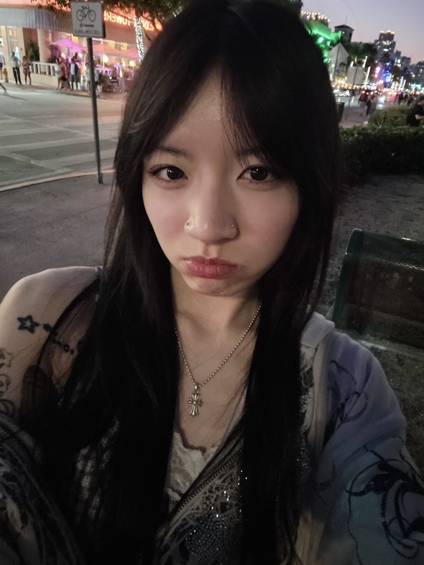

My name is Carmen, and I am majoring in Computer Science with a minor in Media Studies. Ever since I was young, I have always been fascinated by creative technology and its ability to bring any ideas to life. Whether it's through digital art, video editing, or interactive media, I find joy in exploring new ways to express myself and connect others. My passion for creativity drives me to constantly learn and experiment with multiple forms of media and techniques. I have experience in graphic design utilizing Adobe Photoshop, Illustrator and Canva. I also have experience in digital art with programs like Procreate, Krita, and Blender. Prior to MEDPL 150, I had only self-taught knowledge in regards to HTML and CSS. I have created mini projects in the past, including a personal blog website. Through this course, I hope to expand my knowledge even further, especially in web development and interactive media. I am excited to learn new skills and techniques that will allow me to create more engaging content.